One short answer for each thing you can do in AmrPotli. Jump to what you need.আমার পোটলিতে যা যা করা যায়, প্রতিটির ছোট উত্তর। যেটা দরকার সেখানে চলে যান।
Inside Facebook/Messenger: ⋮ → Open in Chrome first.
অ্যান্ড্রয়েড, Chrome: Install → Install।
Samsung Internet: ☰ → Add page to → Home screen।
আইফোন, Safari: Share → Add to Home Screen।
Facebook/Messenger-এর ভেতরে: আগে ⋮ → Open in Chrome।
Installed, it opens full screen, works offline and updates itself. No Play Store needed.ইনস্টল করলে পুরো স্ক্রিনে খোলে, ইন্টারনেট ছাড়া চলে, নিজেই আপডেট হয়। Play Store লাগে না।
Add an entryএন্ট্রি যোগ করুন
Tap the green + (or a quick button on the Dashboard).
Choose Expense, Income, Transfer or Loan.
Type the amount, tap a category tile (or pick from the dropdown for all your categories).
Check the account and date, add a note if you like, tap Save.
সবুজ + চাপুন (বা ড্যাশবোর্ডের দ্রুত বোতাম)।
খরচ, আয়, ট্রান্সফার বা লোন বেছে নিন।
টাকা লিখুন, ক্যাটাগরির টাইলে চাপ দিন (বা সব ক্যাটাগরির জন্য ড্রপডাউন থেকে বাছুন)।
অ্যাকাউন্ট আর তারিখ দেখে, চাইলে নোট লিখে সেভ চাপুন।
“Save & add another” keeps the form open for the next one. To change or delete an entry, tap it in the list.“সেভ করে আরেকটা” চাপলে পরেরটার জন্য ফর্ম খোলা থাকে। এন্ট্রি বদলাতে বা মুছতে তালিকায় সেটাতে চাপুন।
AmrPotli asks once before saving something that looks like a slip: a date in the future, an amount far bigger than usual, or the same entry twice. Tap Save again if it is right.ভুল মনে হলে সেভের আগে আমার পোটলি একবার জিজ্ঞেস করে: ভবিষ্যতের তারিখ, সাধারণের চেয়ে অনেক বড় অঙ্ক, বা একই এন্ট্রি দুবার। ঠিক থাকলে আবার সেভ চাপুন।
Add up several items in one entryএক এন্ট্রিতে কয়েকটা জিনিস যোগ
Tap the amount and AmrPotli's own number pad opens (your phone's keyboard stays away). Type 60+80+150 and you see = 290 as you type. Save, and the note keeps “60 + 80 + 150”. × and ÷ work too: 12×35 for 12 items at ৳35.টাকার ঘরে চাপ দিলে আমার পোটলির নিজের নম্বর প্যাড খোলে (ফোনের কিবোর্ড আসে না)। ৬০+৮০+১৫০ লিখলেই = ২৯০ দেখাবে। সেভ করলে নোটে থাকবে “60 + 80 + 150”। × আর ÷-ও চলে: ৳৩৫ দামের ১২টা হলে ১২×৩৫।
Hold ⌫ to clear the whole amount.পুরো অঙ্ক মুছতে ⌫ চেপে ধরে রাখুন।
Add by speakingমুখে বলে যোগ করুন
Tap Speak in the form (or the big button on the simple screen) and say what you spent, in Bangla or English:ফর্মে বলুন চাপুন (বা সহজ স্ক্রিনের বড় বোতাম) আর কীসে কত খরচ হলো বলুন, বাংলা বা English-এ:
“ডিম দেড়শো, মাছ সাড়ে চারশো” → ৳600
“রিকশা ভাড়া পঞ্চাশ টাকা” → ৳50, Transport
“বেতন পেলাম পঁচিশ হাজার” → ৳25,000, incomeআয়
It fills the amount, items in the note and a category from what you bought. Check and tap Save. Nothing is saved until you do.টাকা, নোটে জিনিসগুলো আর কেনা জিনিস দেখে ক্যাটাগরি বসে যায়। দেখে সেভ চাপুন। আপনি না চাপলে কিছু সেভ হয় না।
Needs internet and a browser with speech (Chrome on Android works best). Your phone turns the words into text; AmrPotli gets only the text and keeps no recording.ইন্টারনেট আর ভয়েস সমর্থন করে এমন ব্রাউজার লাগে (অ্যান্ড্রয়েডের Chrome সবচেয়ে ভালো)। ফোন কথাকে লেখায় বদলায়; আমার পোটলি শুধু লেখাটা পায়, কোনো রেকর্ডিং রাখে না।
Add from a bKash, Nagad or bank SMSবিকাশ, নগদ বা ব্যাংকের SMS থেকে যোগ
In your messages, long-press the SMS and Copy.
In AmrPotli tap + → Paste SMS, paste, and tap Fill from SMS.
Amount, date, account, charge, transaction ID and a category are filled. Check and Save.
মেসেজে SMS-টা চেপে ধরে Copy করুন।
আমার পোটলিতে + → SMS পেস্ট, পেস্ট করে SMS থেকে পূরণ চাপুন।
টাকা, তারিখ, অ্যাকাউন্ট, চার্জ, TrxID আর ক্যাটাগরি বসে যায়। দেখে সেভ করুন।
It learns your shopsআপনার দোকান চিনে রাখে
Payments to Grameenphone, Robi, DESCO, Titas, Daraz, Foodpanda, pharmacies and others get a category by themselves. For anyone else, pick the category once: next time the same shop or number gets it automatically, on all your phones.গ্রামীণফোন, রবি, ডেসকো, তিতাস, দারাজ, ফুডপান্ডা, ফার্মেসি আরও অনেকের পেমেন্টে ক্যাটাগরি নিজেই বসে। অন্যদের জন্য একবার ক্যাটাগরি বেছে দিন: পরের বার একই দোকান বা নম্বরে নিজেই বসবে, সব ফোনে।
It also checks the balance in the SMS against AmrPotli's, and warns if the same TrxID was already added.SMS-এর ব্যালেন্স আমার পোটলির সাথে মেলে কি না দেখে, আর একই TrxID আগে যোগ হলে সতর্ক করে।
Faster on Android: with AmrPotli installed, press and hold the SMS, tap Share and choose AmrPotli. The entry opens already filled. Copied an SMS? Open AmrPotli and it offers “Add the SMS you copied?” (after you allowed pasting once).অ্যান্ড্রয়েডে আরও দ্রুত: আমার পোটলি ইনস্টল থাকলে SMS চেপে ধরে Share চেপে AmrPotli বেছে নিন। এন্ট্রি পূরণ হয়ে খুলবে। SMS কপি করেছেন? আমার পোটলি খুললেই জিজ্ঞেস করবে “কপি করা SMS-টি যোগ করবেন?” (একবার পেস্টের অনুমতি দেওয়ার পর)।
AmrPotli never reads your messages by itself; it only sees an SMS you share, copy or paste.আমার পোটলি নিজে কখনো আপনার মেসেজ পড়ে না; শুধু আপনি যে SMS শেয়ার, কপি বা পেস্ট করেন সেটাই দেখে।
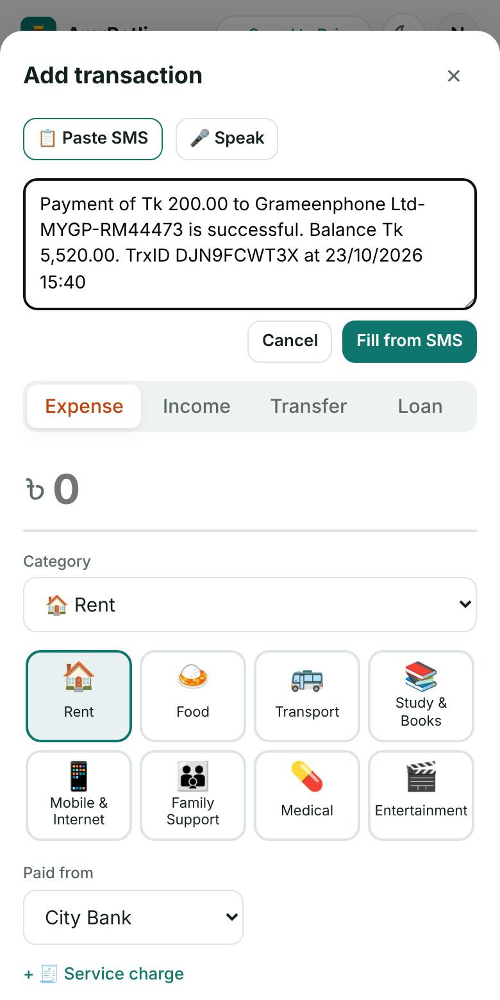
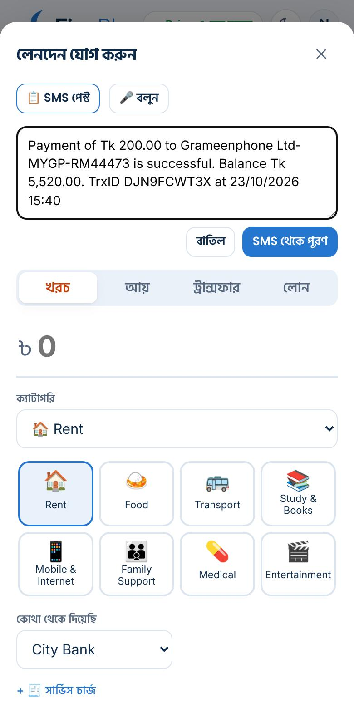
Keep a receipt or memo photoরসিদ বা মেমোর ছবি রাখুন
In the form (and in a stock purchase), tap Receipt photo, then take a photo or choose one from the gallery. A small preview appears; tap it to see it full size. Save the entry and the photo is kept with it. A in the list shows which entries have one.ফর্মে (আর মাল কেনায়) রসিদের ছবি চেপে ছবি তুলুন বা গ্যালারি থেকে বাছুন। ছোট একটা প্রিভিউ দেখাবে; চাপলে বড় করে দেখা যায়। এন্ট্রি সেভ করলে ছবিটা সাথে থাকে। তালিকায় দেখে বোঝা যায় কোনটায় ছবি আছে।
Photos are made small on your phone (about 30–150 KB), saved in your own Google Drive folder and shown on your other phones too. Delete an entry and its photo is removed a few days later.ছবি ফোনেই ছোট করা হয় (প্রায় ৩০–১৫০ KB), আপনার নিজের Google Drive ফোল্ডারে থাকে, অন্য ফোনেও দেখা যায়। এন্ট্রি মুছলে কয়েক দিন পরে ছবিও মুছে যায়।
Photos are not included in the backup file.ব্যাকআপ ফাইলে ছবি থাকে না।
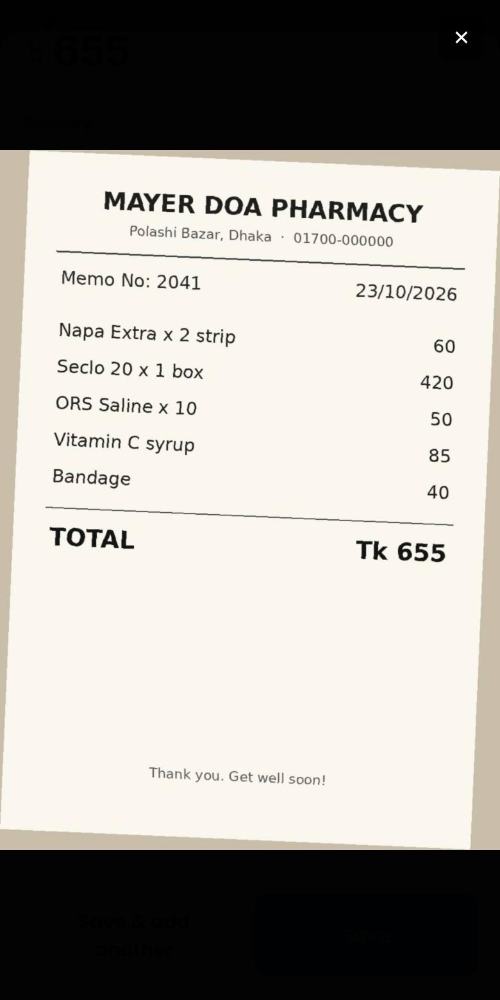
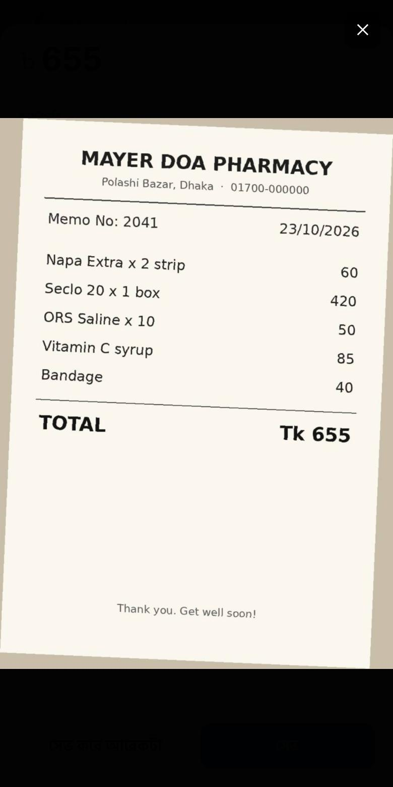
Move money, and count the chargesটাকা সরান, চার্জও হিসাবে রাখুন
Cash out, ATM withdrawal, bank to bKash, putting money in DPS: these are Transfers. Your total stays the same; only where the money is changes. Choose From and To.ক্যাশ আউট, এটিএম থেকে তোলা, ব্যাংক থেকে বিকাশ, ডিপিএসে রাখা: এগুলো ট্রান্সফার। মোট টাকা একই থাকে; শুধু কোথায় আছে বদলায়। কোথা থেকে আর কোথায় বেছে নিন।
Paid a charge? Tap + Service charge and type it. It is taken from the From account and counted as spending under Service Charges. After the first time, AmrPotli suggests the charge at the same rate.চার্জ দিয়েছেন? + সার্ভিস চার্জ চেপে লিখুন। এটা যে অ্যাকাউন্ট থেকে গেল সেখান থেকে কাটা হয় আর Service Charges খরচে যায়। প্রথমবারের পর একই হারে চার্জ আমার পোটলি নিজেই দেখায়।
Moving to an Investment account (DPS, FDR, savings) is shown as saved, not spent.Investment অ্যাকাউন্টে (ডিপিএস, এফডিআর, সঞ্চয়) সরালে জমা হিসেবে দেখায়, খরচ নয়।
Transfer is only between your own accounts. Money sent to your mother or someone else is an Expense (Family Support); money someone sends you is Income (Money from Family). The Transfer screen has buttons to switch.ট্রান্সফার শুধু নিজের অ্যাকাউন্টগুলোর মধ্যে। মা বা অন্য কাউকে পাঠানো টাকা খরচ (Family Support); কেউ আপনাকে পাঠালে সেটা আয় (Money from Family)। ট্রান্সফার স্ক্রিনে বদলানোর বোতাম আছে।
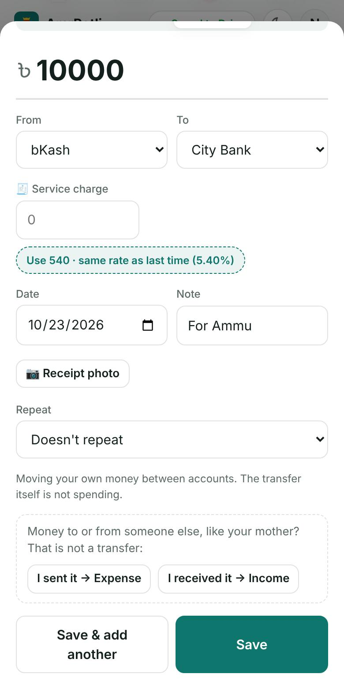
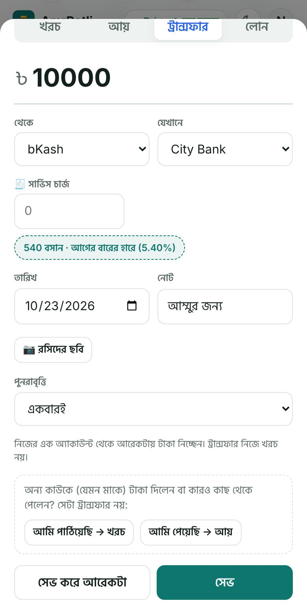
Money to your mother is spendingমাকে পাঠানো টাকা খরচ
Loans and installmentsলোন ও কিস্তি
Tap + → Loan and choose what happened: I borrowed money, I repaid a loan, I lent money to someone, or Someone paid me back. Pick the person (or add a new one) and the account the money went into or came out of.+ → লোন চেপে কী হলো বেছে নিন: আমি টাকা ধার নিয়েছি, আমি লোন শোধ করেছি, আমি কাউকে টাকা ধার দিয়েছি, বা কেউ আমার টাকা ফেরত দিয়েছে। মানুষটিকে বাছুন (বা নতুন যোগ করুন) আর কোন অ্যাকাউন্টে টাকা এল বা গেল।
Due date: when it should be paid back; the Loans card warns as it gets close.
Monthly installments and total interest when borrowing: the card shows “installment 2 of 3” and the next amount.
When repaying, put interest in the interest box: only interest counts as spending.
ফেরতের তারিখ: কবে শোধ করার কথা; কাছে এলে ধারের কার্ড সতর্ক করে।
ধার নেওয়ার সময় মাসিক কিস্তি আর মোট সুদ: কার্ডে দেখাবে “৩টির ২য় কিস্তি” আর পরের অঙ্ক।
শোধের সময় সুদটা সুদের ঘরে দিন: শুধু সুদ খরচ হিসেবে ধরা হয়।
Reports → Loan statement prints the history with one person.Reports → লোন স্টেটমেন্টে একজনের সাথে পুরো ইতিহাস প্রিন্ট হয়।
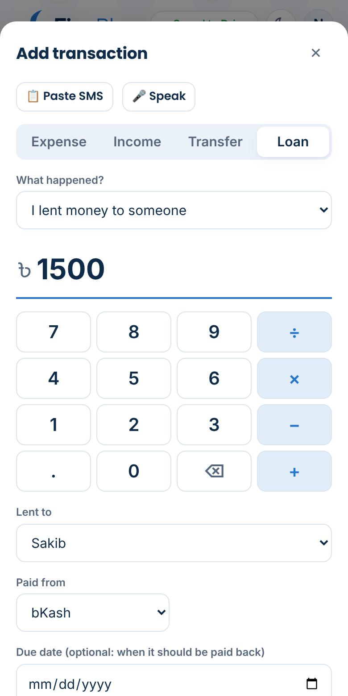
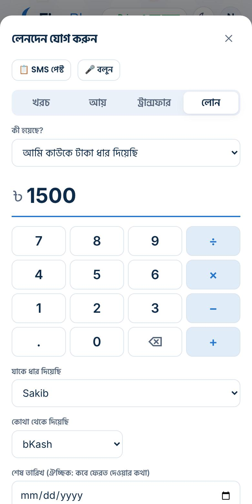
Rent, bills and salary that repeatপ্রতি মাসের ভাড়া, বিল আর বেতন
When you add it the first time, set Repeat → Every month (or Every week). On the day it is due, the Dashboard shows it with three buttons: Add (same as before), Change (different amount or account this time) or Skip. Nothing is added without your tap.প্রথমবার যোগ করার সময় পুনরাবৃত্তি → প্রতি মাসে (বা প্রতি সপ্তাহে) দিন। যেদিন দেওয়ার কথা, ড্যাশবোর্ডে তিনটি বোতামসহ দেখাবে: যোগ (আগের মতো), বদলান (এবার অঙ্ক বা অ্যাকাউন্ট আলাদা) বা বাদ দিন। আপনার চাপ ছাড়া কিছু যোগ হয় না।
Setup → Regular payments lists them all: pause one, change its amount, or stop it.Setup → নিয়মিত লেনদেনে সব আছে: কোনোটা থামান, অঙ্ক বদলান বা বন্ধ করুন।
Budgets and a savings goalবাজেট আর সঞ্চয়ের লক্ষ্য
Setup → Expense categories & monthly budgets: type a monthly amount next to any category. The Dashboard shows a bar for each, amber at 80% and red when you go over, with what is left.Setup → খরচের ক্যাটাগরি ও মাসিক বাজেট: যেকোনো ক্যাটাগরির পাশে মাসিক অঙ্ক লিখুন। ড্যাশবোর্ডে প্রতিটির বার দেখায়, ৮০%-এ হলুদ আর ছাড়ালে লাল, কত বাকি তা-সহ।
Setup → Monthly savings goal: income minus spending you want to keep each month. The Week view shares it out by week.Setup → মাসিক সঞ্চয়ের লক্ষ্য: প্রতি মাসে আয় থেকে খরচ বাদে কত রাখতে চান। সপ্তাহের ভিউতে সপ্তাহ হিসেবে ভাগ করে দেখায়।
Potli tipsপোটলির পরামর্শ
The “Potli says” card on the Dashboard looks at your own entries and points out what matters: a regular payment due tomorrow when the account is short, a loan due soon, a budget nearly used, spending that grew since last month, cash-out charges, last week in a sentence, and how your savings goal is going. Shops also get old baki, the best sales day and a falling profit margin.ড্যাশবোর্ডের “পোটলি বলছে” কার্ড আপনার নিজের এন্ট্রি দেখে জরুরি কথাগুলো বলে: কাল নিয়মিত পেমেন্ট দিতে হবে অথচ অ্যাকাউন্টে টাকা কম, লোনের তারিখ কাছে, বাজেট প্রায় শেষ, গত মাসের চেয়ে কোথায় খরচ বেড়েছে, ক্যাশ আউটের চার্জ, এক কথায় গত সপ্তাহ, আর সঞ্চয়ের লক্ষ্য কেমন চলছে। দোকানের জন্য পুরোনো বাকি, সেরা বিক্রির দিন আর কমে যাওয়া লাভের হারও।
The most urgent tips come first; tap More tips for the rest. Tap ✕ on a tip that isn't useful, and Potli shows fewer like it.সবচেয়ে জরুরিগুলো আগে; বাকিগুলো দেখতে “আরও পরামর্শ” চাপুন। কাজের না লাগলে ✕ চাপুন, পোটলি এমন পরামর্শ কম দেখাবে।
Tips are worked out on your phone, with rules we wrote. Nothing is sent to us or to any AI company.পরামর্শগুলো আপনার ফোনেই, আমাদের লেখা নিয়মে হিসাব করা হয়। আমাদের বা কোনো AI কোম্পানির কাছে কিছুই যায় না।
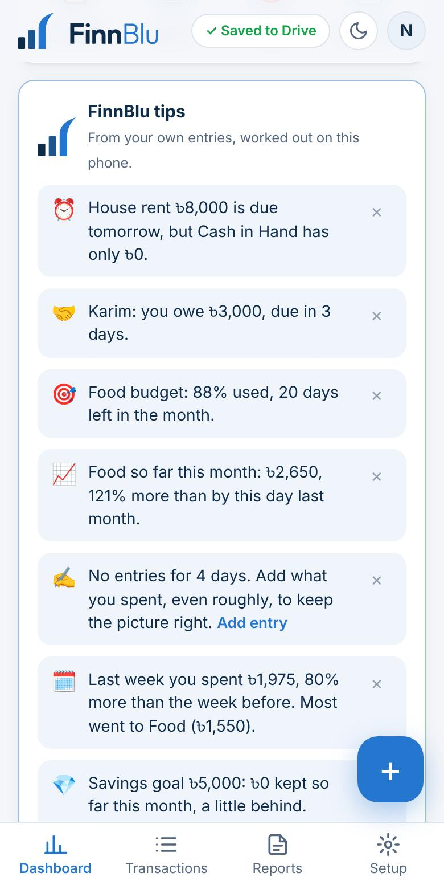
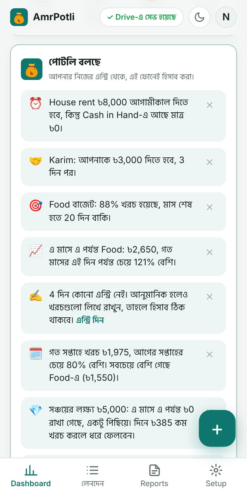
Help inside the appঅ্যাপের ভেতরেই সাহায্য
Tap ❓ How do I…? on the tips card, or in Setup → Help & feedback, and type what you want to do in English, Bangla or Banglish: “loan”, “বাকি”, “karmochari”. A short answer appears at once, even offline, with a link to the full steps here.টিপস কার্ডে বা Setup → সাহায্য ও মতামত-এ ❓ কীভাবে করব…? চাপুন, আর কী করতে চান লিখুন, ইংরেজি, বাংলা বা বাংলিশে: “loan”, “বাকি”, “karmochari”। সঙ্গে সঙ্গে ছোট উত্তর আসে, ইন্টারনেট ছাড়াও, আর এখানকার পুরো ধাপের লিংক।
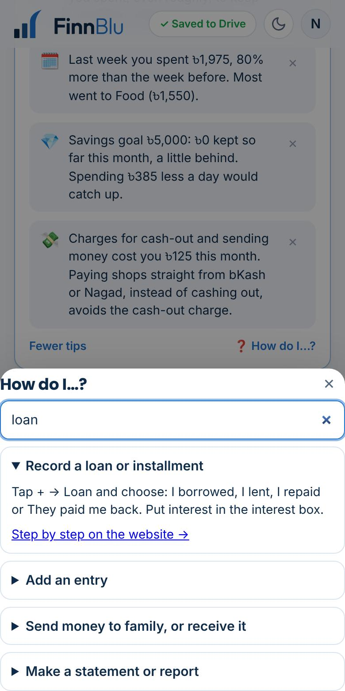
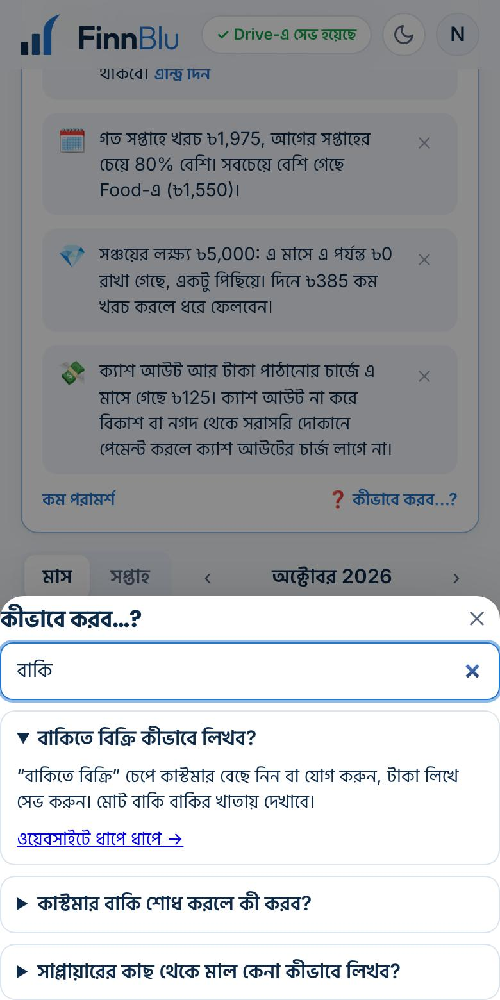
Statements and reportsস্টেটমেন্ট ও রিপোর্ট
Open Reports, choose a document and a period, and tap to make it. It opens as a page you can print or save as PDF.Reports খুলে একটা কাগজ আর সময় বেছে তৈরি করুন। একটা পাতা হিসেবে খোলে, প্রিন্ট বা PDF করা যায়।
Account statement: like a bank statement, with running balance.
Income & expense: for a month or any period.
Assets & liabilities: what you own and owe on a date.
Documents are in English, the language banks and offices expect.কাগজগুলো English-এ, ব্যাংক আর অফিস যে ভাষা চায়।
Undo a deleteমুছে ফেলা ফিরিয়ে আনুন
Deleting doesn't ask “are you sure?”: it happens at once, and a message with Undo stays at the bottom for a few seconds. Tap Undo and it is back exactly as it was. This works for entries, accounts, categories, products and regular payments.মুছতে “নিশ্চিত?” জিজ্ঞেস করে না: সাথে সাথে মুছে যায়, আর নিচে কয়েক সেকেন্ড “ফিরিয়ে আনুন” লেখা বার্তা থাকে। চাপলে ঠিক আগের মতো ফিরে আসে। এন্ট্রি, অ্যাকাউন্ট, ক্যাটাগরি, পণ্য আর নিয়মিত লেনদেন সবকিছুতে চলে।
Deleting a stock purchase or a baki sale also removes its payment, so the supplier's or customer's balance stays right.মাল কেনা বা বাকিতে বিক্রি মুছলে তার পেমেন্টও মুছে যায়, তাই সাপ্লায়ার বা কাস্টমারের হিসাব ঠিক থাকে।
Lock with a PIN or fingerprintপিন বা আঙুলের ছাপে লক
Setup → App lock → Turn on, and choose a 4-digit PIN. If your phone supports it, you can add your fingerprint or face too. Choose when it locks again: immediately, after 1 minute or after 5 minutes away.Setup → অ্যাপ লক → চালু করুন, তারপর ৪ সংখ্যার পিন দিন। ফোন সমর্থন করলে আঙুলের ছাপ বা মুখও যোগ করতে পারেন। কখন আবার লক হবে বেছে নিন: সাথে সাথে, ১ মিনিট পরে বা ৫ মিনিট পরে।
Forgot the PIN? Tap Forgot PIN? on the lock screen and sign in with Google again; your data stays safe in Drive.পিন ভুলে গেছেন? লক স্ক্রিনে “PIN ভুলে গেছেন?” চেপে আবার Google দিয়ে সাইন ইন করুন; ডেটা Drive-এ নিরাপদ থাকে।
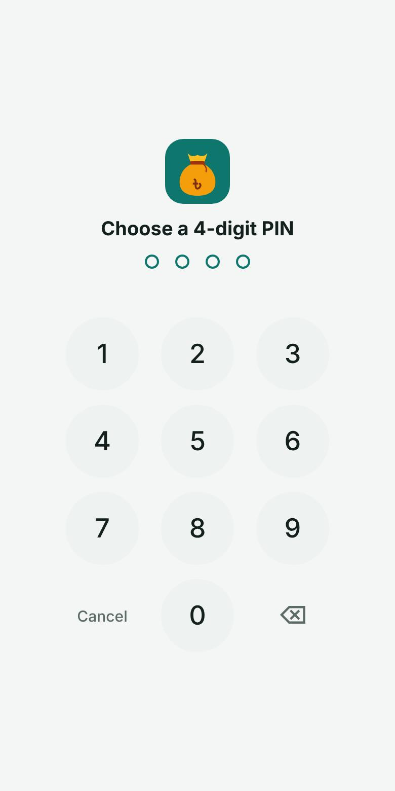
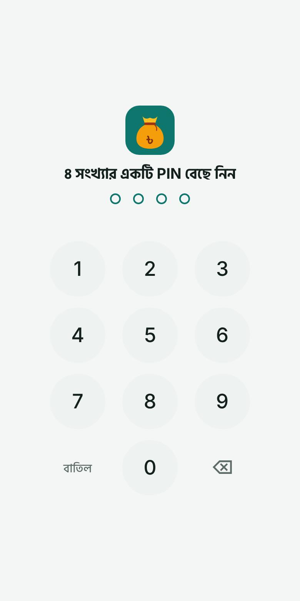
Backup, and moving to a new phoneব্যাকআপ আর নতুন ফোনে নেওয়া
Everything is saved in your Google Drive automatically. New phone? Sign in with the same Google account and it all comes back.সব নিজে থেকেই আপনার Google Drive-এ সেভ হয়। নতুন ফোন? একই Google অ্যাকাউন্টে সাইন ইন করুন, সব ফিরে আসবে।
For a spare copy, Setup → Backup & data → Download backup (.json). AmrPotli reminds you once a month on the Dashboard; tap Later to be reminded in a week. To bring a backup back, Import .json file… lets you replace everything or add to what you have.বাড়তি কপির জন্য Setup → ব্যাকআপ ও ডেটা → ব্যাকআপ ডাউনলোড (.json)। মাসে একবার ড্যাশবোর্ডে মনে করিয়ে দেয়; “পরে” চাপলে এক সপ্তাহ পরে আবার। ব্যাকআপ ফেরত আনতে .json ফাইল ইমপোর্ট… দিয়ে সব বদলে দিন বা যা আছে তার সাথে যোগ করুন।
Download transactions (.csv) opens in Excel or Google Sheets.লেনদেন ডাউনলোড (.csv) Excel বা Google Sheets-এ খোলে।
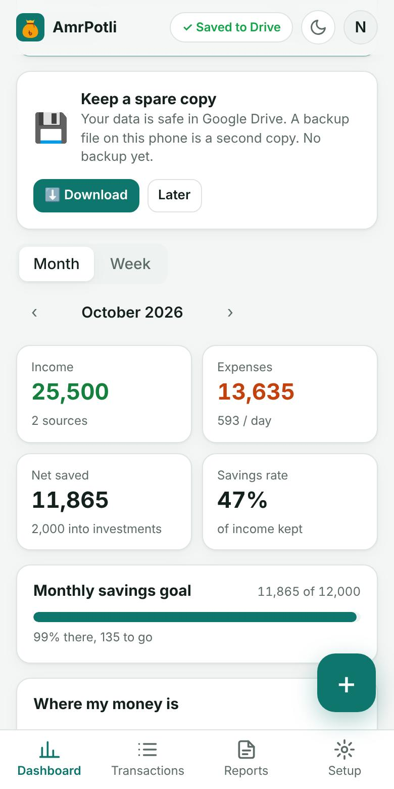
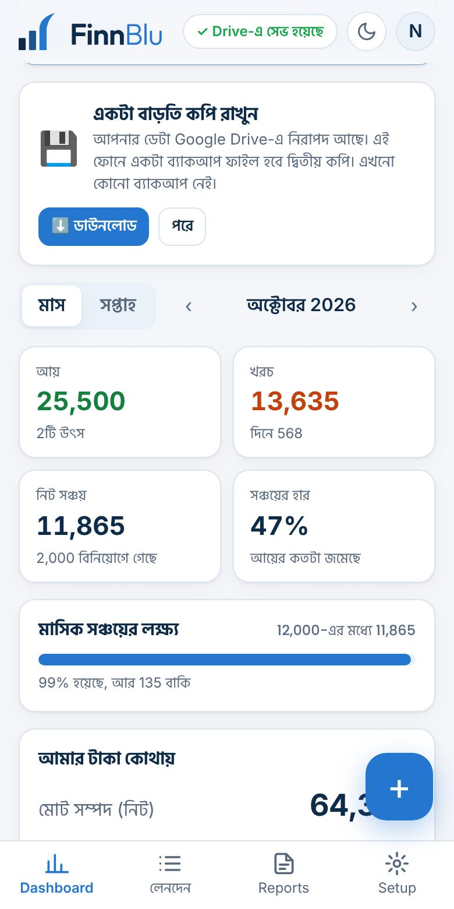
Change your categoriesক্যাটাগরি বদলান
Setup → Expense categories and Income sources. Tap a name to rename it (past entries are renamed too), ✕ to remove it (past entries keep it), or type a new one and tap Add.Setup → খরচের ক্যাটাগরি আর আয়ের উৎস। নাম বদলাতে নামে চাপ দিন (আগের এন্ট্রিগুলোর নামও বদলায়), বাদ দিতে ✕ (আগের এন্ট্রিতে থেকে যায়), নতুন হলে লিখে যোগ চাপুন।
The free plan has up to 24 categories in total, spending and income together, and a shop can have up to 15 product groups (Setup → Products you buy). The ones AmrPotli adds itself, like Service Charges, are never blocked by the limit.ফ্রি প্ল্যানে খরচ আর আয় মিলিয়ে মোট ২৪টি পর্যন্ত ক্যাটাগরি, আর দোকানে ১৫টি পর্যন্ত পণ্যের ধরন (Setup → যেসব পণ্য কেনেন)। Service Charges-এর মতো যেগুলো আমার পোটলি নিজে যোগ করে, সেগুলো এই সীমায় আটকায় না।
Delete your accountঅ্যাকাউন্ট মুছে ফেলুন
Setup → Delete my account. It offers a backup download first, then asks you to type DELETE. It removes the AmrPotli data and photos from your Google Drive and this phone, and the app's access to your Google account. A shop owner's shop book is deleted too; a helper's deletes only their own data. This cannot be undone.Setup → আমার অ্যাকাউন্ট মুছে ফেলুন। আগে ব্যাকআপ ডাউনলোডের সুযোগ দেয়, তারপর DELETE লিখতে বলে। এটি আপনার Google Drive আর এই ফোন থেকে আমার পোটলির তথ্য ও ছবি মুছে দেয়, আর আপনার Google অ্যাকাউন্টে অ্যাপের অনুমতি সরিয়ে দেয়। দোকানের মালিকের দোকানের খাতাও মুছে যায়; সহকারীর বেলায় শুধু তাঁর নিজের তথ্য। এটি আর ফেরানো যায় না।
Read the questions, or tell us what happened in a short form. Please don't write amounts or account numbers.প্রশ্নোত্তর পড়ুন, বা ছোট একটা ফর্মে কী হয়েছে জানান। দয়া করে টাকার অঙ্ক বা অ্যাকাউন্ট নম্বর লিখবেন না।